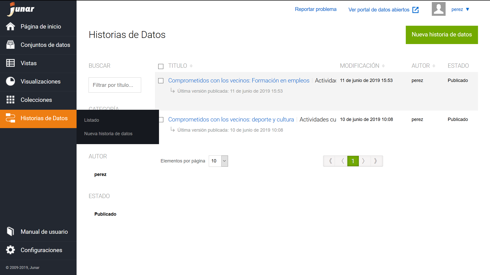
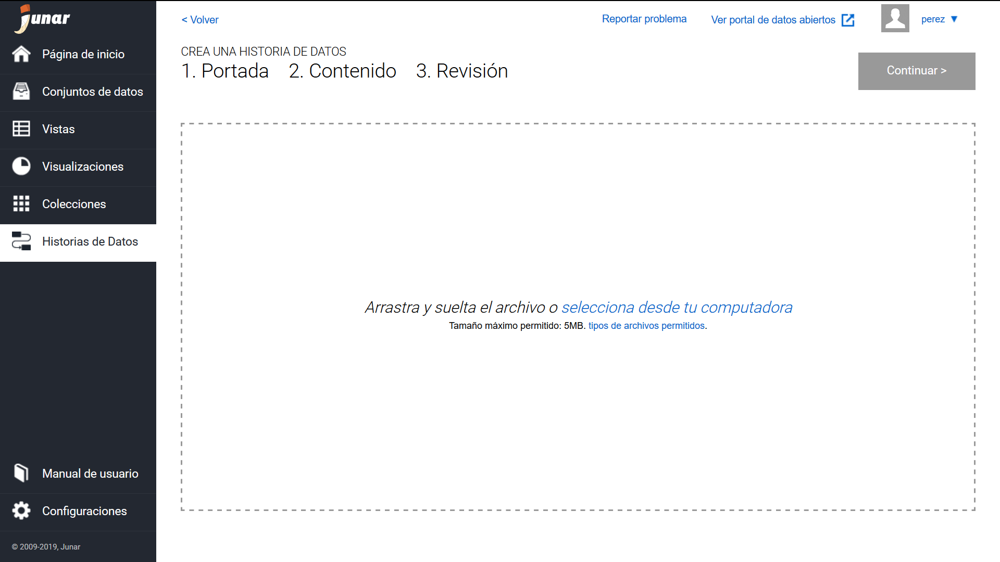
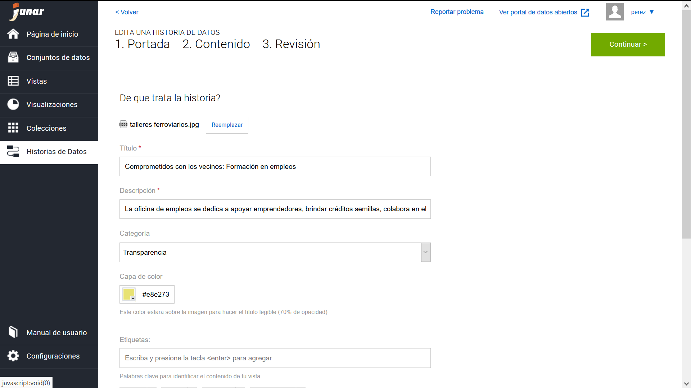
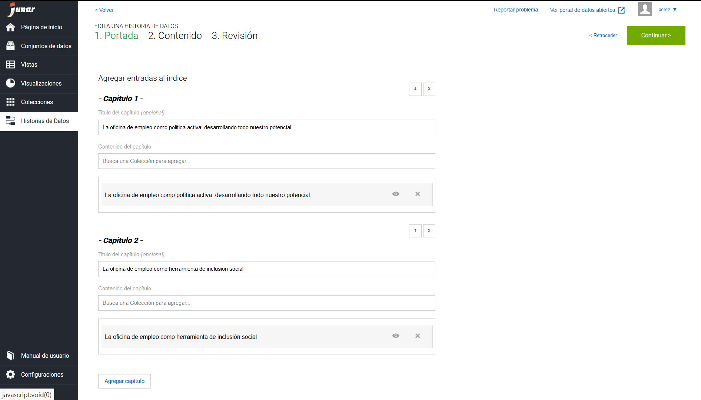
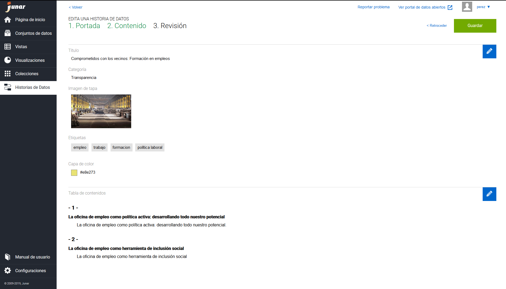
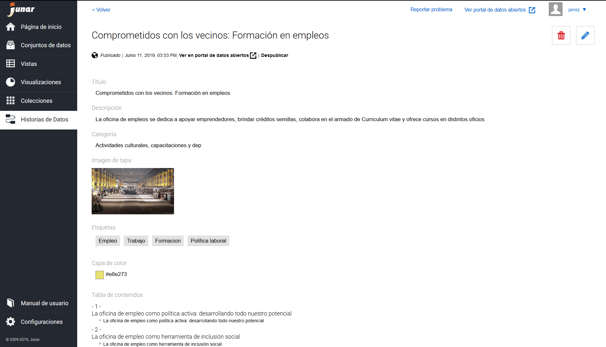

8. Creación de una Hisoria de Datos¶
Acceso directo desde:
Posicionarse sobre el botón → Historias de datos
Seleccione la opción → Nueva Historias de datos
El primer paso para crear una historia de datos es seleccionar la imagen de la portada.
Luego debe completar los metadatos de nuestra Historia: título, descripción, categoría y etiquetas. Además, podemos seleccionar una capa de color para la portada.
Una historia de datos se compone de capítulos. En cada capítulo puede haber una o más páginas. Cada una de las páginas de un capítulo es una Colección que debe ser creada previamente (ver Colecciones)
Primero debe ingresar el título del capítulo. Luego debe buscar las colecciones que desea agregar a ese capítulo.
Puede agregar ilimitados capítulos y reordenarlos mientras construye la historia.
Por último, puede previsualizar los datos principales de su historia antes de guardar.
Una vez guardada su historia puede publicarla.
